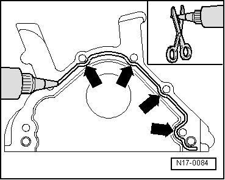
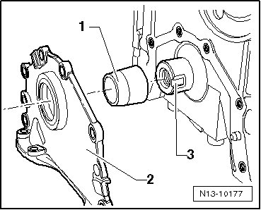

Sealing Flange, Vibration Damper Side
Sealing Flange, Vibration Damper Side
Special tools, testers and auxiliary items required
• Counter-holder tool (T10069)
• Assembly tool (T10215)
• Torque wrench (V.A.G 1601)
• Torque wrench (V.A.G 1332)
Removing
- Bring lock carrier into service position. Radiator Support
- Remove ribbed belt --> [ Ribbed Belt ] Ribbed Belt.
- Remove vibration damper. To do so, lock vibration damper using counter-holder tool (T10069).

- Remove oil pan --> [ Oil Pan ] Service and Repair.
- Unscrew sealing flange.
- Remove sealant residue on sealing surfaces.
Installing
- Before installing, remove oil remains from end of crankshaft with a clean cloth.
- Cut off the nozzle on the tube of sealant at the front mark (dia. of nozzle approximately 3 mm).

- Apply a sealant bead of approximately 2 to 3 mm as shown - arrows - on to clean sealing surface of sealing flange.
• Cover sealing ring with a clean cloth before applying sealing bead.
• Sealant bead must not be thicker than 2 to 3 mm, otherwise excess sealant could get into oil pan and clog oil intake pipe strainer.
• Note the expiration date of the sealing compound.
• The sealing flange must be installed within 5 minutes after application of silicon sealant.
- Insert guide sleeve (T10215/1) - 1 - at front on to crankshaft pin - 3 -.
- Now slide sealing flange with sealing ring - 2 - carefully over guide sleeve.
- Tighten sealing flange bolts on cylinder crankshaft housing.

- Install oil pan --> [ Oil Pan ] Service and Repair.
• Vibration damper securing bolt must be replaced.
• Tighten securing bolt using torque wrench (V.A.G 1601).
- Install vibration damper and secure using counter-holder tool (T10069).
- Tighten the new mounting bolt to 100 Nm + 1/ 2 turn (180°).
- Install ribbed belt --> [ Ribbed Belt ] Ribbed Belt.